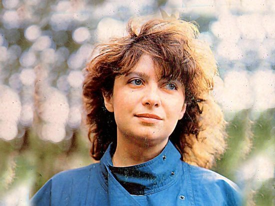
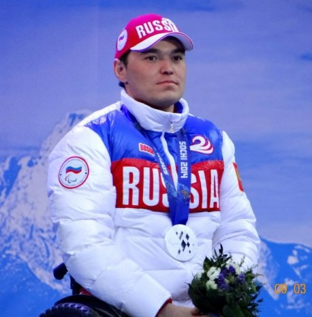

Известные люди Стерлитамака
Выдающиеся уроженцы и деятели города, оставившие яркий след в науке, спорте, культуре и искусстве.
Гордость города
Стерлитамак воспитал десятки чемпионов, деятелей искусств, ученых и исследователей, чьи имена известны далеко за пределами Республики Башкортостан.
Выдающиеся земляки

Татьяна Анциферова
род. 1954 г. • Эстрадная певица
Родилась в Стерлитамаке. Легендарный голос советской эстрады, исполнительница всенародно любимых песен «Ищу тебя» (из к/ф «31 июня») и прощального гимна Олимпиады-80 «До свиданья, Москва».

Ирек Зарипов
род. 1983 г. • Спортсмен, паралимпийский чемпион
Родился и вырос в Стерлитамаке. Заслуженный мастер спорта России по биатлону и лыжным гонкам, четырёхкратный чемпион Паралимпиады 2010 года в Ванкувере. Почётный гражданин города.
Татьяна Лебедева
род. 1976 г. • Олимпийская чемпионка, лёгкая атлетика
Родилась в Стерлитамаке, где и начала путь в лёгкой атлетике. Олимпийская чемпионка 2004 года в Афинах, многократная чемпионка мира в прыжках в длину и тройном прыжке, заслуженный мастер спорта России.
Евгений Баженов (BadComedian)
род. 1991 г. • Видеоблогер, кинообозреватель
Родился в Стерлитамаке. Ведущий популярнейшего авторского канала «BadComedian», один из самых известных и влиятельных кинокритиков и видеоблогеров Рунета с миллионной аудиторией.
Предложить выдающегося земляка
Знаете известного уроженца или жителя Стерлитамака, которого нет в нашем списке? Заполните форму, и после проверки модератором информация появится на портале.